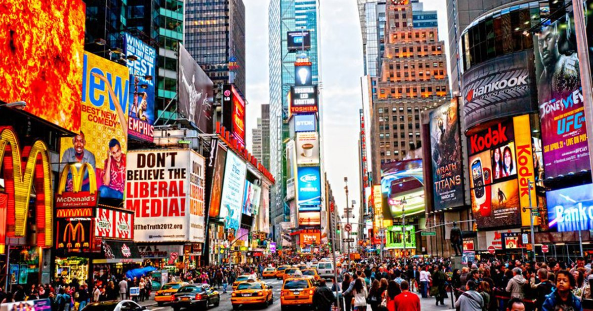
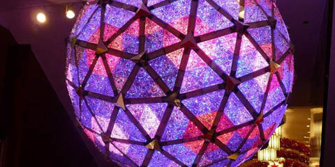

Times Square
Times Square e' uno dei maggiori incroci di New York, all'intersezione tra sette palazzi e una stazione dell'omonima citta'. Si estende dalla West 42nd Street alla West 47th Street. Times Square e' nota soprattutto per i grandi e numerosi cartelloni pubblicitari animati e digitali.

Cosa sapere sul Times Square?
- L'edificio piu' famoso e' One Times Square
- Prende il nome di Times Square nel 1905 quando Adolph S.Ochs, inizialmente conosciuta come Long Acre
- La famosa palla dalle mille luci che scende a capodanno viene tenuta per tutto l'anno all'ultimo piano dell'edificio, quasi 4 metri di diametro e piu' di 5000 kg e controllato dal computer.
- Vengono utilizzati 161 megawatts contemporaneamente all'apice del picco nel quartiere dei teatri
- Quando arriva la mezzanotte del 31 dicembre una tonnellata di coriandoli, confetti, si riversa sulla folla. Sono desideri.
